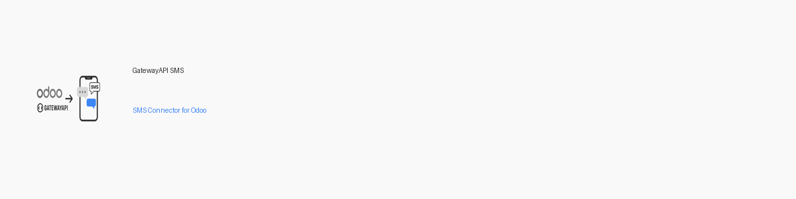

GatewayAPI SMS Connector

This module integrates Odoo with the GatewayAPI SMS REST API, and replaces the Odoo sms IAP with GatewayAPI integration, allowing you to send SMS messages directly from Odoo using your GatewayAPI account.
Configuration
- Go to: Settings > Technical > IAP > IAP Accounts
- Set the Provider to GatewayAPI
- Fill in your Service Name (must be sms) and API Token (from your GatewayAPI dashboard)
- Optionally set a minimum credit threshold and notification action
- Click Test Connection to verify your setup
Features
- Send SMS via GatewayAPI from Odoo
- Automatic credit balance checks and notifications
- Easy configuration and integration
Screenshots

Configuration

Test Connection

Notification

Balance
Support
For more information, see the GatewayAPI documentation or visit the project repository.